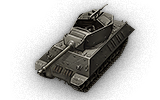
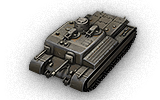
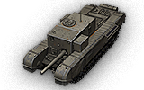
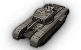
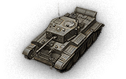
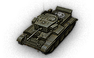
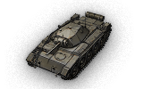
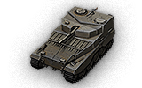
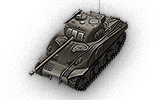
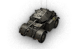

United Kingdom · Tier VI
All nations and tiers · EU v20410 → RU v14600ru · 3 November 2026
Achilles · Tier VI

Firepower
DPM (HP/min) EU 2 235  RU 2 133.41
RU 2 133.41
Rate of fire (rounds/min) EU 14.90 RU 14.22
Reload time (s) EU 4.03 RU 4.22
Gun handling
Aim time (s) EU 1.63 RU 1.82
Dispersion · firing EU 3 RU 3.50
Mobility
Forward speed on soft terrain (km/h) EU 41.11 RU 39.51
Engine power (hp) EU 550 RU 528.64
Power/weight (hp/t) EU 19.44 RU 18.69
Tank traverse (°/s) EU 43.81 RU 35.46
Tank traverse on hard terrain (°/s) EU 46.80 RU 42.95
Tank traverse on medium terrain (°/s) EU 38.29 RU 35.14
Tank traverse on soft terrain (°/s) EU 23.40 RU 21.48
AT 8 · Tier VI

Firepower
DPM (HP/min) EU 2 040.65  RU 2 183.02
RU 2 183.02
Rate of fire (rounds/min) EU 13.60 RU 14.55
Reload time (s) EU 4.41 RU 4.12
Gun handling
Elevation (°) EU 18 RU 7.50
Mobility
Forward speed on soft terrain (km/h) EU 14.78 RU 14.24
Engine power (hp) EU 450 RU 433.49
Power/weight (hp/t) EU 10.88 RU 10.48
Tank traverse (°/s) EU 29.20 RU 20.86
Tank traverse on hard terrain (°/s) EU 29.27 RU 23.68
Tank traverse on medium terrain (°/s) EU 25.61 RU 20.72
Tank traverse on soft terrain (°/s) EU 14.64 RU 11.84
Churchill Gun Carrier · Tier VI

Firepower
DPM (HP/min) EU 1 844.46 RU 1 946.93
Rate of fire (rounds/min) EU 6.59 RU 6.95
Reload time (s) EU 9.11 RU 8.63
Gun handling
Aim time (s) EU 2.01 RU 1.82
Armor & health
Health EU 730 RU 950
Miscellaneous
View range (m) EU 340 RU 360
Churchill VII · Tier VI

Penetration (mm)
EU  AP 148 /
AP 148 /  APCR 208 /
APCR 208 /  HE 38 → RU
HE 38 → RU  AP 156 /
AP 156 /  APCR 208 /
APCR 208 /  HE 38
HE 38
Gun handling
Aim time (s) EU 1.92 RU 2.21
Dispersion · moving EU 0.16 RU 0.18
Dispersion · tank traverse EU 0.16 RU 0.18
Dispersion · turret traverse EU 0.14 RU 0.16
Elevation (°) EU 20 RU 12
Depression (°) EU 8 RU 4
Mobility
Forward speed (km/h) EU 25 RU 20
Forward speed on hard terrain (km/h) EU 25 RU 20
Forward speed on medium terrain (km/h) EU 25 RU 20
Forward speed on soft terrain (km/h) EU 15.44 RU 15.04
Reverse speed (km/h) EU 14 RU 12
Engine power (hp) EU 380 RU 370.05
Power/weight (hp/t) EU 9.33 RU 9.09
Tank traverse (°/s) EU 25.03 RU 20.86
Tank traverse on hard terrain (°/s) EU 27.77 RU 23.42
Tank traverse on medium terrain (°/s) EU 23.50 RU 19.81
Tank traverse on soft terrain (°/s) EU 13.28 RU 11.20
Armor & health
Health EU 1 200 RU 1 080
Health · engine EU 205 RU 104
Miscellaneous
Moving camo EU 3.76 RU 3.71
Moving camo · after firing EU 0.93 RU 0.92
Cromwell · Tier VI

Gun handling
Elevation (°) EU 20 RU 15
Depression (°) EU 13 RU 8
Mobility
Forward speed on soft terrain (km/h) EU 52.98 RU 51.85
Engine power (hp) EU 700 RU 687.23
Weight (kg) EU 27 934 → RU 28 025
Power/weight (hp/t) EU 25.06 RU 24.52
Tank traverse on hard terrain (°/s) EU 40.36 RU 58.35
Tank traverse on medium terrain (°/s) EU 36.33 RU 52.52
Tank traverse on soft terrain (°/s) EU 20.18 RU 29.18
Armor & health
Health EU 950 RU 840
Cromwell B · Tier VI

Gun handling
Elevation (°) EU 20 RU 15
Depression (°) EU 11 RU 8
Crusader · Tier VI

Penetration (mm)
EU  AP 126 /
AP 126 /  APCR 180 /
APCR 180 /  HE 30 → RU
HE 30 → RU  AP 110 /
AP 110 /  APCR 180 /
APCR 180 /  HE 30
HE 30
Mobility
Forward speed (km/h) EU 65 RU 58
Forward speed on hard terrain (km/h) EU 65 RU 58
Forward speed on medium terrain (km/h) EU 65 RU 58
Forward speed on soft terrain (km/h) EU 59.94 RU 46.40
Engine power (hp) EU 560 RU 433.49
Power/weight (hp/t) EU 28.35 RU 21.95
Tank traverse on hard terrain (°/s) EU 49.56 RU 46.85
Tank traverse on medium terrain (°/s) EU 44.61 RU 42.17
Tank traverse on soft terrain (°/s) EU 24.78 RU 23.43
Armor & health
Health EU 800 RU 680
FV304 · Tier VI

Armor & health
Health · track EU 145 RU 90
Health · ammo rack EU 170 RU 100
Track repair time (s) EU 11.62 RU 12.63
Sherman Firefly · Tier VI

Firepower
DPM (HP/min) EU 1 997.23 RU 2 183.02
Rate of fire (rounds/min) EU 13.31 RU 14.55
Reload time (s) EU 4.51 RU 4.12
Gun handling
Aim time (s) EU 2.01 RU 1.73
Mobility
Tank traverse on hard terrain (°/s) EU 47.47 RU 47.67
Tank traverse on medium terrain (°/s) EU 37.97 RU 38.14
Tank traverse on soft terrain (°/s) EU 21.10 RU 21.19
Staghound Mk. III · Tier VI

Penetration (mm)
EU  AP 162 /
AP 162 /  APCR 190 /
APCR 190 /  HE 38 → RU
HE 38 → RU  AP 138 /
AP 138 /  APCR 190 /
APCR 190 /  HE 38
HE 38
Firepower
DPM (HP/min) EU 2 370.45 RU 2 016.12
Rate of fire (rounds/min) EU 18.96 RU 16.13
Reload time (s) EU 3.16 RU 3.72
Gun handling
Aim time (s) EU 1.92 RU 2.11
Dispersion (m/100 m) EU 0.33 RU 0.36
Dispersion · damaged EU 0.65 RU 0.73
Dispersion · firing EU 3 RU 4
Mobility
Forward speed (km/h) EU 60 RU 55
Forward speed on hard terrain (km/h) EU 60 RU 55
Forward speed on medium terrain (km/h) EU 60 RU 55
Forward speed on soft terrain (km/h) EU 51.41 RU 55
Terrain resist (hard) EU 0.86 RU 0.12
Terrain resist (med) EU 0.96 RU 0.12
Terrain resist (soft) EU 1.73 RU 0.12
Tank traverse (°/s) EU 31.29 RU 62.58
Tank traverse on hard terrain (°/s) EU 31.30 RU 62.60
Tank traverse on medium terrain (°/s) EU 28.17 RU 62.60
Tank traverse on soft terrain (°/s) EU 15.65 RU 62.60
Armor & health
Health EU 900 RU 800